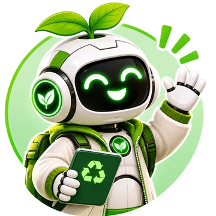
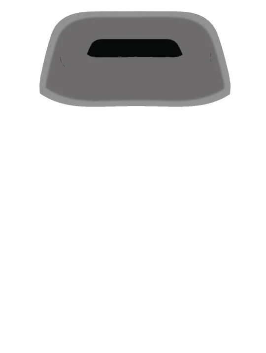

Estación inteligente de separación · Valledupar
¿Qué residuo vas a desechar?
Escribe o dime qué residuo quieres desechar.
Escuchando…

Hola, soy ECO. Dime qué vas a desechar y te muestro la caneca correcta.
Canecas de la estación





5